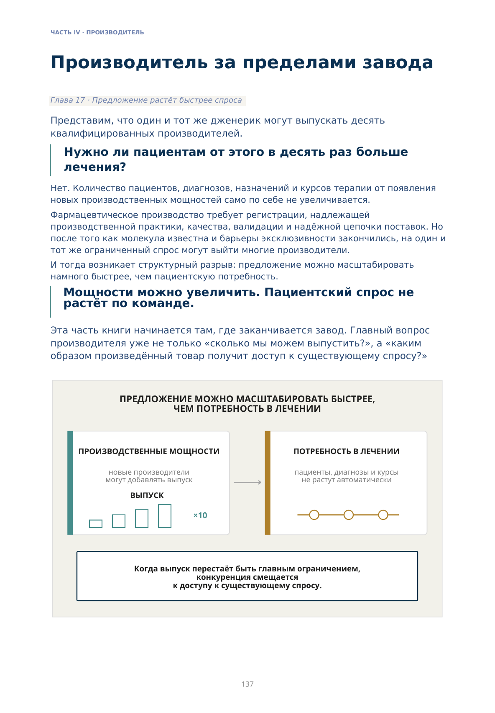
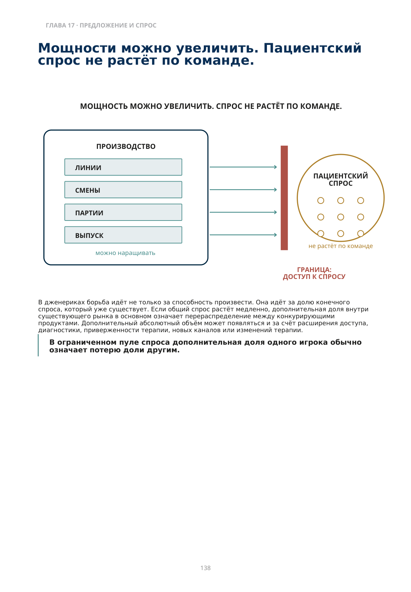

Производитель за пределами завода
Глава 17 · Предложение растёт быстрее спроса
Представим, что один и тот же дженерик могут выпускать десять квалифицированных производителей.
Нужно ли пациентам от этого в десять раз больше лечения?
Нет. Количество пациентов, диагнозов, назначений и курсов терапии от появления новых производственных мощностей само по себе не увеличивается. Фармацевтическое производство требует регистрации, надлежащей производственной практики, качества, валидации и надёжной цепочки поставок. Но после того как молекула известна и барьеры эксклюзивности закончились, на один и тот же ограниченный спрос могут выйти многие производители. И тогда возникает структурный разрыв: предложение можно масштабировать намного быстрее, чем пациентскую потребность.
Мощности можно увеличить. Пациентский спрос не растёт по команде.
Эта часть книги начинается там, где заканчивается завод. Главный вопрос производителя уже не только «сколько мы можем выпустить?», а «каким образом произведённый товар получит доступ к существующему спросу?»

Описание схемы
FIG_066: Предложение масштабируется быстрее, чем потребность в лечении
Слева производственные мощности можно масштабировать — линии, оборудование и выпуск. Справа потребность в лечении растёт значительно медленнее. Когда выпуск перестаёт быть главным ограничением, конкуренция смещается к доступу к существующему спросу.
Мощности можно увеличить. Пациентский спрос не растёт по команде.
В дженериках борьба идёт не только за способность произвести. Она идёт за долю конечного спроса, который уже существует. Если общий спрос растёт медленно, дополнительная доля внутри существующего рынка в основном означает перераспределение между конкурирующими продуктами. Дополнительный абсолютный объём может появляться и за счёт расширения доступа, диагностики, приверженности терапии, новых каналов или изменений терапии.
В ограниченном пуле спроса дополнительная доля одного игрока обычно означает потерю доли другим.

Описание схемы
FIG_067: Мощность можно увеличить, спрос не растёт по команде
Производственные рычаги — линии, смены, партии и выпуск — могут увеличиваться, но пациентский спрос не растёт по команде. На границе между ними возникает ключевое ограничение: доступ к спросу.
Конкурировать приходится за доступ
Товар должен пройти несколько чужих решений
| Производитель может увеличить | Рынок не может создать по команде |
|---|---|
| Количество линий и смен | Дополнительных пациентов |
| Размер производственной партии | Новые диагнозы только потому, что есть мощность |
| Количество поставщиков и площадок | Больше назначений для той же клинической потребности |
| Объём выпуска товарной позиции | Неограниченное потребление одного препарата |
После выхода с завода препарат ещё должен получить:
- регуляторный доступ;
- доступ к финансируемому спросу;
- доступ к дистрибьютору или прямой закупке сети;
- листинг и представленность;
- уровень наличия в момент спроса;
- назначение, рекомендацию или выбор пациента.
Производство создаёт предложение. Доступ к рынку превращает его в продажи.
УРОВЕНЬ СОБСТВЕННИКА · ПРОВЕРКА ЭТАПА
| РУКОВОДИТЕЛЬ ДОЛЖЕН ВИДЕТЬ | Размер реального спроса по молекуле; число значимых покупателей; долю продаж по каналам; зависимость от одного игрока, контролирующего доступ; уровень наличия у производителя и в канале. |
|---|---|
| ПРИЗНАКИ СЛАБОСТИ | Мощность растёт быстрее продаж; большие партии превращаются в запас; успех измеряется отгрузкой в канал; одна потерянная сеть закрывает существенную часть рынка. |
| ЛОВУШКА | Считать, что хороший продукт, низкая себестоимость и свободная мощность автоматически создают рыночную долю. |
| ЧТО ДАЛЬШЕ? | Кто контролирует путь от готового товара к пациенту? |